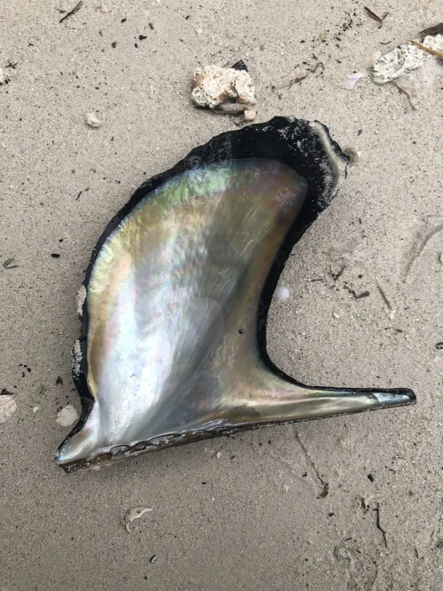

软体动物 · 动物界
企鹅珍珠贝 Pteria penguin

壳形斜伸如企鹅翅膀的大型珍珠贝，壳表黑褐、内面珍珠层厚，可培育半圆附壳珠，栖息于珊瑚礁浅海。
- 分类
- 门软体动物门纲双壳纲目珍珠贝目科珍珠贝科属珍珠贝属
- 栖息环境
- 潮间带下区至水深三十米的珊瑚礁、岩礁和港湾，以足丝附着
- 地理分布
- 印度洋至西太平洋热带海区，包括中国南海、日本南部、菲律宾和澳大利亚北部
- 保护级别
- 尚无专门保护级别；野生种群受采捕与珊瑚礁退化影响
物种志
企鹅珍珠贝的贝壳大而斜长，壳长可达二十厘米，左右两壳不对称，前缘短、后缘延伸成翼状，整体轮廓像一只张开的企鹅翅膀，企鹅珍珠贝之名由此而来。壳表黑褐至暗褐色，有明显的生长纹和放射状的鳞片，壳内面是厚实的银白色珍珠层，带彩虹光泽。足丝粗壮，用它把自己固定在礁石或网笼上。
它分布于印度洋至西太平洋的热带海区，包括中国南海、日本南部、菲律宾、印度尼西亚和澳大利亚北部，栖息在潮间带下区至水深三十米的珊瑚礁、岩礁和港湾，靠足丝附着在硬质基底上，滤食水中的浮游藻类和有机颗粒。它是雌雄异体，繁殖期在春夏，幼虫浮游一段时间后附着变态。由于珍珠层厚、壳形宽大，它被广泛用于培育半圆附壳珍珠，也可加工成工艺品，中国海南和广东有人工养殖。目前尚无专门的保护级别，野生种群受采捕和珊瑚礁退化影响。
形态与习性
- 壳长可达二十厘米，左右壳不对称
- 壳形后缘延伸成翼状，形似企鹅翅膀
- 壳表黑褐至暗褐，有生长纹与放射状鳞片
- 内面银白色珍珠层厚，带彩虹光泽
- 栖息水层潮间带下区至水深三十米的礁区
- 利用培育半圆附壳珍珠，壳可制工艺品
趣味知识
- 它的壳斜斜地张开，像一只刚要起飞的企鹅翅膀。
- 它靠一束粗壮的足丝把自己拴在礁石上，风浪再大也冲不走。
- 半圆珍珠就贴在它的壳内壁上培育，取珠时不必杀死母贝。